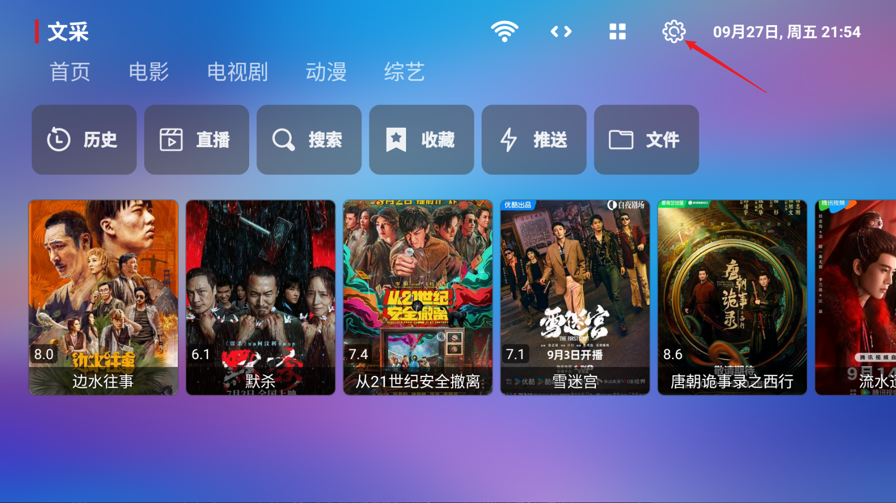
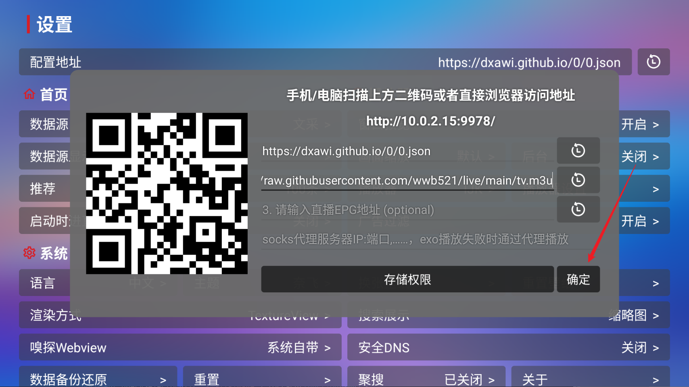
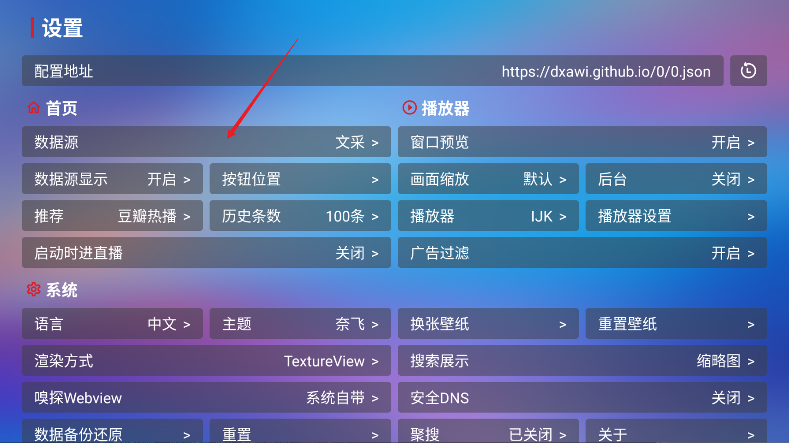
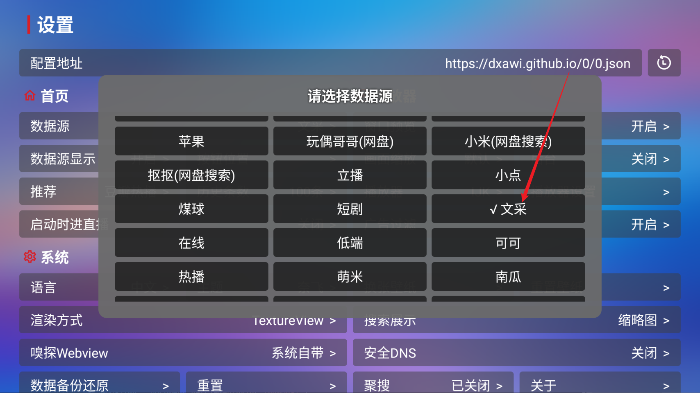
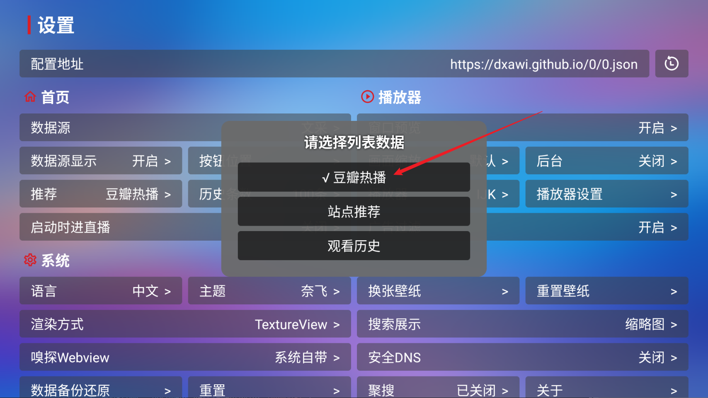
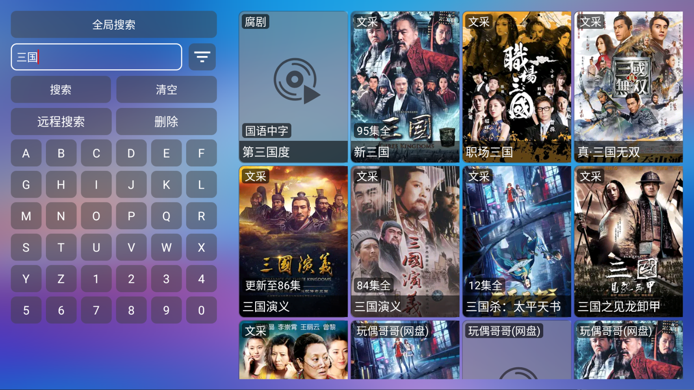
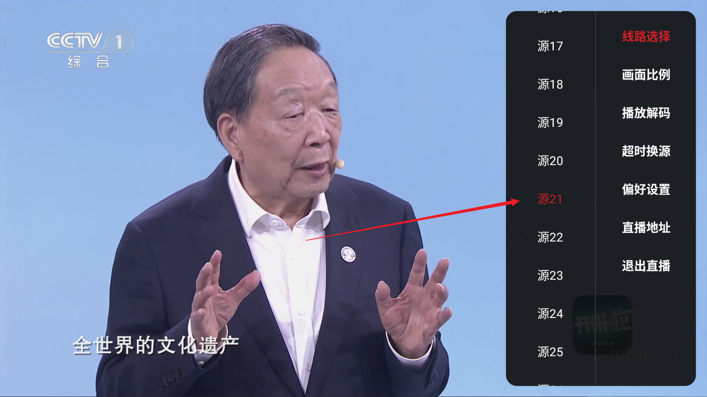

1. TVBox下载：下载链接
2. 打开应用，开始会显示一个提示框，不用理会，点击取消即可。
3. 点击右上角设置图标；

4. 点击配置地址；
5. 在弹出的窗口的第一行数据源地址中输入数据源地址：http://pandown.pro/tvbox/tvbox.json
6. 在弹出的窗口的第二行直播源地址中输入直播源地址：https://freetv.fun/test_channels_china_new.txt
7. 点击确定

8. 返回到主界面，此时界面就会有内容了，然后再次点击设置，点击数据源；

9. 选择文采，然后点击旁边空白，这一步是设置优先源为文采，即搜索结果首先显示文采源的内容，其他源内容紧随其后；（更新，现在推荐选择 巧技三|QD4K 或 天天 ，文采已不可用）

10.点击推荐；
11.选择豆瓣热播；

12.返回到主界面，点击搜索，即可搜索想要看的额内容

一般来说，文采源即可稳定播放，如果播放出问题，选择其他源即可。首页点击直播可以观看电视频道，如果显示为黑，可以点击右边，出现源，换源即可。
